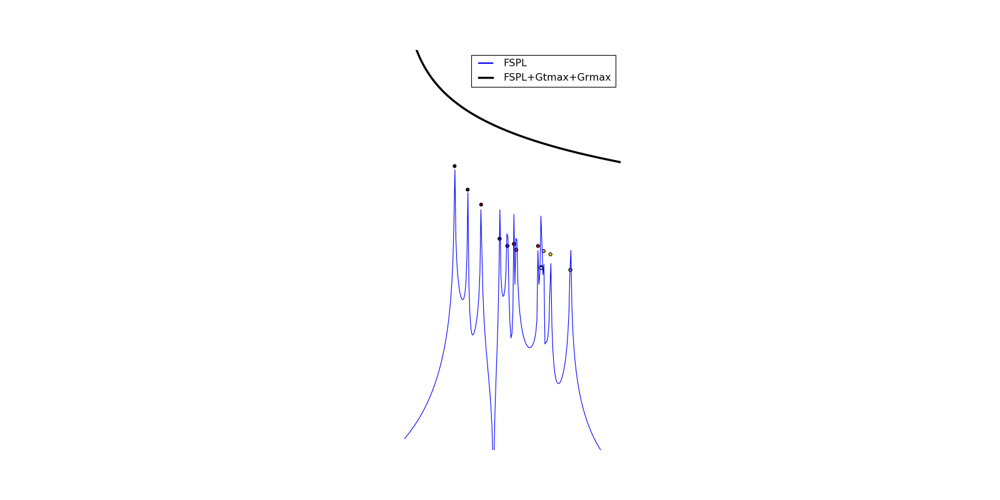

DLink¶
-
class
pylayers.simul.link.DLink(**kwargs)[source]¶ Bases:
pylayers.simul.link.LinkDeterministic Link Class
Attributes
L (Layout) Layout to be used Aa : Antenna Antenna of device dev_a Ab : Antenna Antenna of device dev_b a : np.ndarray (3,) position of a device dev_a b : np.ndarray (3,) position of a device dev_b ca : int cycle a number cb : int cycle b number Ta : np.ndarray (3,3) Rotation matrice of Antenna of device dev_a relative to global Layout scene Tb : np.ndarray (3,3) Rotation matrice of Antenna of device dev_b relative to global Layout scene fGHz : np.ndarray (Nf,) frequency range of Nf points used for evaluation of channel wav : Waveform Waveform to be applied on the channel save_idx : int number to identify the h5 file generated Methods
OnClick(event)adp([imax])construct the angular delay profile afp(**kwargs)Evaluate angular frequency profile array_exist(key, array[, tol])check an array key has already been stored in h5py file check_grpname(key, grpname)Check if the key’s data with a given groupname checkh5()check existence of previous simulations run with the same parameters. eval(**kwargs)link evaluation evalH(**kwargs)evaluate channel transfer function get_grpname()Determine the data group name for the given configuration get_idx(key, array[, tol])try to get the index of the requested array in the group key help([letter, typ])generic help inforay(iray)provide full information about a specified ray init_positions([force])initialize random positions for a link load(obj, grpname, **kwargs)Load a given object in the correct grp plt_aspread(**kwargs)plot angular spread plt_cir(**kwargs)plot link channel impulse response plt_doa(**kwargs)plot direction of arrival and departure plt_dod(**kwargs)plot direction of arrival and departure plt_dspread(**kwargs)plot delay spread reset_config()reset configuration when a new layout is loaded save(obj, key, grpname[, force])Save a given object in the correct group save_init(filename_long)initialize the hdf5 file for link saving select()show(**kwargs)show the link stack(key, array)stack new array in h5py file Attributes Summary
AaAbLLnameTaTbabcacbcutoffdelay_excess_max_nsfGHzthresholdwavMethods Summary
OnClick(event)adp([imax])construct the angular delay profile afp(**kwargs)Evaluate angular frequency profile array_exist(key, array[, tol])check an array key has already been stored in h5py file check_grpname(key, grpname)Check if the key’s data with a given groupname checkh5()check existence of previous simulations run with the same parameters. eval(**kwargs)link evaluation evalH(**kwargs)evaluate channel transfer function get_grpname()Determine the data group name for the given configuration get_idx(key, array[, tol])try to get the index of the requested array in the group key inforay(iray)provide full information about a specified ray init_positions([force])initialize random positions for a link load(obj, grpname, **kwargs)Load a given object in the correct grp plt_aspread(**kwargs)plot angular spread plt_cir(**kwargs)plot link channel impulse response plt_doa(**kwargs)plot direction of arrival and departure plt_dod(**kwargs)plot direction of arrival and departure plt_dspread(**kwargs)plot delay spread reset_config()reset configuration when a new layout is loaded save(obj, key, grpname[, force])Save a given object in the correct group save_init(filename_long)initialize the hdf5 file for link saving select()show(**kwargs)show the link stack(key, array)stack new array in h5py file Attributes Documentation
-
Aa¶
-
Ab¶
-
L¶
-
Lname¶
-
Ta¶
-
Tb¶
-
a¶
-
b¶
-
ca¶
-
cb¶
-
cutoff¶
-
delay_excess_max_ns¶
-
fGHz¶
-
threshold¶
-
wav¶
Methods Documentation
-
afp(**kwargs)[source]¶ Evaluate angular frequency profile
Parameters: fGHz : np.array
frequency range
az : azimuth angle (radian)
tilt : tilt angle (-pi/2<tilt<pi/2)
polar : string
win : string ‘rect’ | ‘hamming’
_filemeas : string
_filecal : string
ang_offset :
BW : float
bandwidth
ext : string
‘txt’ | ‘mat’
dirmeas : string
directory of the data in the project path
Notes
If a measurement file is given the angular range is obtained from the measurement otherwise the variable az is used.
-
array_exist(key, array, tol=0.001)[source]¶ check an array key has already been stored in h5py file
Parameters: key: string
key of the h5py group
array : np.ndarray
array type to check existency
tol : np.float64
tolerance (in meter for key == ‘p_map’)
Returns: (ua)
ua : np.ndarray
the indice in the array of the file[key] group if the array is emtpy, value doesn’t exist
-
check_grpname(key, grpname)[source]¶ - Check if the key’s data with a given groupname
- already exists in the h5py file
Parameters: key: string
key of the h5py group
grpname : string
groupe name of the h5py file
Notes
update the key grpname of self.dexist[key] dictionnary
-
checkh5()[source]¶ check existence of previous simulations run with the same parameters.
Returns: update self.dexist dictionnary
-
eval(**kwargs)[source]¶ link evaluation
Parameters: applywav :boolean
Apply waveform to H
force : list
Force the computation ([‘sig’,’ray2’,’ray,’Ct’,’H’]) AND save (replace previous computations)
alg : 1|’old’|’exp’|’exp2’
version of run for signature
si_progress: bollean ( False)
display progression bar for signatures
diffraction : boolean (False)
takes into consideration diffraction points
ra_number_mirror_cf : int
rays.to3D number of ceil/floor reflexions
ra_ceil_H: float, (default [])
- ceil height .
If [] : Layout max ceil height If 0 : only floor reflection (outdoor case) If -1 : neither ceil nor floor reflection (2D case)
ra_vectorized: boolean (True)
if True used the (2015 new) vectorized approach to determine 2drays
progressbar: str
None: no progress bar python : progress bar in ipython
Notes
update self.ak and self.tk
- self.ak : ndarray
- alpha_k
- self.tk : ndarray
- tau_k
Examples
>>> from pylayers.simul.link import * >>> DL=DLink(L="defstr.lay") >>> DL.eval() >>> DL.show() >>> DL.plt_cir() >>> plt.show()
(Source code, png, hires.png, pdf)

-
evalH(**kwargs)[source]¶ evaluate channel transfer function
Notes
This function modifies the orientation of the antenna at both sides via Ta and Tb 3x3 matrices and recalculates the channel transfer function for those new orientations. The self.H variable is updated
-
get_grpname()[source]¶ Determine the data group name for the given configuration
Notes
Update the key grpname of self.dexist[key] dictionnary, where key = ‘sig’|’ray’|’Ct’|’H’
-
get_idx(key, array, tol=0.001)[source]¶ - try to get the index of the requested array in the group key
- of the hdf5 file. If array doesn’t exist, the hdf5file[key] array is stacked
Parameters: key: string
key of the h5py group
array : np.ndarray
array to check existence
tol : np.float64
tolerance (in meters for key == ‘p_map’)
Returns: (u_opt, u): tuple
u : np.ndarray
the index in the array of the file[key] group
u_opt : string (‘r’|’s’)
return ‘r’ if array has been read into h5py file return ‘s’ if array has been stacked into the array of group key
See Also:
Links.array_exist
-
inforay(iray)[source]¶ provide full information about a specified ray
Parameters: iray : int
ray index
-
init_positions(force=False)[source]¶ initialize random positions for a link
Parameters: force : boolean
-
load(obj, grpname, **kwargs)[source]¶ Load a given object in the correct grp
Parameters: obj : Object
(Signatures|Rays|Ctilde|Tchannel)
grpname : string
groupe name of the h5py file
kwargs :
layout for sig and rays
-
plt_cir(**kwargs)[source]¶ plot link channel impulse response
Parameters: BWGHz : Bandwidth
Nf : Number of frequency points
fftshift : boolean
rays : boolean
display rays contributors
fspl : boolean
display free space path loss
-
plt_doa(**kwargs)[source]¶ plot direction of arrival and departure
Parameters: fig : plt.figure
ax : plt.axis
phi: tuple (-180, 180)
phi angle
normalize: bool
energy normalized
reverse : bool
inverse theta and phi represenation
polar : bool
polar representation
cmap: matplotlib.cmap
mode: ‘center’ | ‘mean’ | ‘in’
see bsignal.energy
s : float
scatter dot size
fontsize: float
edgecolors: bool
colorbar: bool
title : bool
-
plt_dod(**kwargs)[source]¶ plot direction of arrival and departure
Parameters: fig : plt.figure
ax : plt.axis
phi: tuple (-180, 180)
phi angle
normalize: bool
energy normalized
reverse : bool
inverse theta and phi represenation
polar : bool
polar representation
cmap: matplotlib.cmap
mode: ‘center’ | ‘mean’ | ‘in’
see bsignal.energy
s : float
scatter dot size
fontsize: float
edgecolors: bool
colorbar: bool
title : bool
-
save(obj, key, grpname, force=False)[source]¶ Save a given object in the correct group
Parameters: obj : Object
(Signatures|Rays|Ctilde|Tchannel)
key : string
key of the h5py file
gpname : string
groupe name of the h5py file
force : boolean or list
-
save_init(filename_long)[source]¶ initialize the hdf5 file for link saving
Parameters: filename_long : str
complete path and filename
‘sig’ : Signatures
‘ray2’ : 2D rays
‘ray’ : 3D rays
‘Ct’ : Propagation channel
‘H’ : Transmission channel
‘p_map’ : points
‘c_map’ : cycles
‘f_map’ : frequency
‘A_map’ : antennas
‘T_map’ : rotation
-
show(**kwargs)[source]¶ show the link
Parameters: s : int
size of Tx/Rx circle in points
ca : string
color of termination a (Tx)
cb : string
color of termination b (Rx)
alpha : float
transparency
axis : boolean
display axis boolean (default True)
figsize : tuple
figure size if fig not specified default (20,10)
fontsize : int
default 20
rays : boolean
activation of rays vizalization (True)
bsig : boolean
activation of signature vizualization (False)
laddr : list
list of signature addresses
cmap : colormap
radius : float
radius in meters for layout vizualization
labels : boolean
enabling edge label (useful for signature identification)
pol : string
‘tt’,’pp’,’tp’,’pt’,’co’,’cross’,tot’
col : string
‘cmap’
width : float
alpha : float
dB : boolean
default False
dyn : float
dynamic in dB
Examples
>>> from pylayers.simul.link import * >>> DL=Link() >>> DL.show(lr=-1,rays=True,dB=True,col='cmap',cmap=plt.cm.jet) >>> DL.show(laddr=[(6,2)],bsig=True)
-
{kind=link}
{kind=link}